Dynamics Queue Admin, the dispatch-queue management console, version
1.0.0
Document
SRS-1.0.0, the Software Requirements
Specification
Application
Dynamics Queue Admin, the dispatch-queue (loading-place) management
console of the Dynamics freight marketplace. Web application,
product version 1.0.0.
Asset type
Web Application
Asset code
ASSET-DYN-QA-001
Standard
INSA Secure Website Management Standard, Version 1.0, 2014 EC
Production host
queue.dynamicsroute.tech
Backend API
https://app.dynamicsroute.tech (production) /
https://dev.dynamicsroute.tech (development), reached
at <VITE_API_BASE_URL>/api. The backend
(transportBackEndNative) is a separate system of
record.
Version specified
1.0.0
Scope
This web console only. The Dynamics backend, the driver mobile
application, the shipper application and the
operations/administrator dashboards are separate systems; their
interfaces to this console are specified in §5 and §7.
Related documents
System & Architecture Design Document (SDD), Technical Design /
Low-Level Design (TDD/LLD), End User Guide, Security Documentation;
gap analysis
queue-admin-gap-analysis.md; INSA standard content
src/data/insaStandard.ts.
Submitting entity
Dynamics Transport
Contact person
Marew Masresha, General Manager
Prepared by
Marew Masresha, General Manager
Reviewed by
Marew Masresha, General Manager
Approved by
Marew Masresha, General Manager
Date of preparation
15 October 2026
Date of submission
15 October 2026
Status of this document
This specification describes the console as implemented in
the submitted release. Every requirement listed here is present in the
shipped web application; we do not specify any forward-looking
features. Where a capability is deliberately absent or depends on a
backend service that is not yet implemented, the requirement (or its
note) says so plainly (§8.5). The submitting entity completes the
administrative fields (submitting entity, contact person, approval and
dates). Each requirement carries a
Source: line pointing at the repository file
that implements it.
Contents
1
Introduction
2
Overall description
3
Functional requirements
4
Non-functional requirements
5
External interface requirements
6
Analysis models
7
Data requirements
8
Business rules and status model
9
Requirements traceability and document control
A
Appendix A — Requirement identifier index
B
Appendix B — Revision history
How to read this document
§3 contains the numbered functional requirements (prefix
FR-), grouped by application area, each with a priority and
a Source citation to the file that implements it. §4 contains
the non-functional requirements (NFR-). §6 presents the
analysis models (the system use-case model, and the sequence and
activity diagrams). §8 defines the queue, bidding and status business
rules that most functional requirements refer to, and it states plainly
which decisions the console makes and which
transportBackEndNative (the backend, the system of record)
enforces. Requirement identifiers are stable and are referenced by the
SDD and by the test evidence, so a reviewer can trace a requirement to
its design element and on to its implementation.
Client-authority note
Dynamics Queue Admin is a client of the Dynamics backend.
Authentication state, queue ordering, geofence decisions, bidding gate
state, bid ranking and offer acceptance are
authoritative on the server. The console renders that
state and issues requests; it holds no independent authority over
marketplace business data (§7.4).
1. Introduction
1.1 Purpose
This document specifies the requirements of Dynamics Queue Admin 1.0.0,
the single-page web console used to operate a loading place (a
Queue Organization) on the Dynamics freight marketplace. We wrote it for
our own development and test baseline and for external review. It forms
part of the submission package for the Information Security Authority's
website review against the INSA Secure Website Management Standard
(Version 1.0, 2014 EC).
1.2 Document conventions
Requirement identifiers. Functional requirements are
identified FR-<AREA>-NN and non-functional
requirements NFR-<AREA>-NN (for example
FR-QUE-09, NFR-SEC-06). Identifiers are
stable and are not reused when a requirement is withdrawn.
Priority tags.M denotes a must-have
requirement (we cannot release the console without it) and
S a should-have requirement.
Priority is assigned to every requirement individually and is not
inherited by groups.
Obligation keywords. "shall" states a binding
requirement, "should" a recommendation and "may" an option. All
requirements in §3 and §4 are stated with "shall".
Source citations. Each requirement carries a
Source: line naming the repository file (and,
where useful, the line) that implements it, giving a
requirement-to-code link.
As-built meaning. "implemented" means present in the
submitted release 1.0.0; no forward-looking feature is specified. "The
backend" always means transportBackEndNative, the system
of record; "the console" means this application.
Models. Diagrams in §6 are authored as Mermaid
sources under docs/insa/assets/ and numbered
Figure 6.x; each model is traceable to the requirement
families it elaborates.
Typographic conventions.Monospace marks
identifiers, paths and values. Amber
highlighted text marks an honest limitation
or a server/hosting-owned control rather than a defect.
1.3 Intended audience and reading suggestions
The readers we had in mind are the stakeholders of the INSA website
review of Dynamics Queue Admin 1.0.0 and the parties who maintain the
console. The table below suggests a reading order by audience.
Reader
Interest
Suggested reading
INSA / security reviewer
Assess the console against the Secure Website Management Standard.
§1, §2, §4 (NFR-SEC), §7, §9
Business owner / management
Confirm scope, obligations and approval.
§1, §2, §9.3
Developer / maintainer
Understand required behaviour and how it is realized.
§3, §6, §7, §8
Tester / QA
Derive verification from unambiguous requirements.
§3, §4, §9.2
Operator (Queue Org Admin / Dispatcher)
Confirm the console matches daily operations.
§2, §3, §8
1.4 Scope
Dynamics Queue Admin does three jobs. First,
loading-place management: creating and administering a
Queue Organization profile, its coordinates and optional check-in
radius, its approval status, and its members (roles 11 and 12). Second,
the FIFO driver queue: proving driver presence by GPS
check-in and placing arrivals into a first-in-first-out line per vehicle
type, then dispatching, overriding, removing and auditing entries.
Third, bidding on the shipper's behalf: approving or
closing bidding per order and accepting a driver's bid on the shipper's
behalf using explicit identifiers. It also covers a dashboard over all
organizations, derived reporting, real-time synchronization, a
security-compliance dashboard, localization (English and Amharic) and
dark mode.
Out of scope: the Dynamics backend
(transportBackEndNative), which is the system of record;
the driver mobile application; the shipper application; and the
operations and administrator dashboards. These are separate systems with
separate requirements documents. All business logic of record (queue
ordering, the check-in geofence, the bidding gate, journey status and
offer acceptance) lives in and is enforced by the backend. This console
is a client of that record and holds no authority over it (§7.4).
1.5 Definitions and acronyms
Term
Meaning
Queue Organization
A "loading place" tenant of the console (customs, factory, cement,
depot, mine, farm, port, other) with coordinates, an optional
check-in radius, an approval status and a queue-enabled flag.
Queue Org Admin
Backend roleId: 11. Administers the loading place:
profile, membership and approval of bidding per order.
Queue Dispatcher
Backend roleId: 12. Runs the FIFO queue: manual
check-in, dispatch, override, remove and entry history.
Admin / Super Admin
Backend roleId: 3 / roleId: 6. Approve
loading places and oversee all organizations. Short session (24
hours).
FIFO queue
First-in-first-out driver waiting line per vehicle type, keyed by
the server-issued
queueNumber.
Check-in
Proving driver presence at the loading place. The authoritative
geofence decision for a GPS check-in is made by the backend; the
console computes a Haversine distance for on-screen proximity
cues.
targetedShipperUserUUID
An optional field on a queue entry that reserves a queued driver
for one shipper; carried through dispatch as the shipper target.
Bidding
Drivers offer a price on an order; the console lists the
authoritative bids cheapest-first and the operator accepts one on
the shipper's behalf.
Bid
A driver's offer on an order (driverBidUniqueId,
bidAmount, bidStatus), ranked by the
backend.
Journey status
A backend status id (0-20) describing an order's lifecycle; only
journey-status-1 orders are eligible for dispatch / bidding.
OTP
One-time password delivered by SMS; the sole authentication
factor.
JWT
JSON Web Token issued after OTP verification and held in an
httpOnly, SameSite cookie set server-side; never exposed to
JavaScript.
Socket.IO
The real-time channel carrying the console's live queue and
organization events.
RTK Query
Server-state data-fetching and caching layer; a single base
api extended by feature endpoint modules.
Membership
A user's active registration under a Queue Organization with role
11 or 12; membership is the permission.
FR / NFR
Functional requirement / non-functional requirement identifier
used in §3 and §4.
1.6 References
src/utils/constant.ts, the single source of truth for
REST endpoint paths.
src/lib/redux/api/*.ts, the endpoint modules and the RTK
Query contract.
src/lib/redux/api/base.ts, the base query, credentials
handling and 401-to-logout behaviour.
src/lib/socket.ts, the Socket.IO client, its
subscriptions and the debounced invalidation.
src/routes/AppRoutes.tsx, the route table and lazy
loading.
src/components/auth/ProtectedRoute.tsx,
src/components/auth/RoleGuard.tsx, the guard stack.
src/types/queue.ts,
src/lib/redux/api/types.ts, the domain types.
src/data/insaStandard.ts, the INSA standard content shown
in the compliance dashboard.
package.json, vite.config.ts,
.env.example, the build and environment model.
docs/queue-admin-gap-analysis.md, the known gaps we cite
in §7.5.
1.7 Overview
§2 covers the product perspective, user classes, operating environment,
constraints and dependencies. The functional requirements live in §3,
in eleven families (FR-AUTH, FR-REG, FR-ORG, FR-MEM, FR-QUE, FR-BID,
FR-ORD, FR-RPT, FR-NOTIF, FR-SET, FR-SECP), and the non-functional
requirements in §4, in seven families (NFR-SEC, NFR-PERF, NFR-USA,
NFR-COMP, NFR-REL, NFR-MNT, NFR-PRIV). §5 specifies the external
interfaces (user, software, hardware, communications). §6 presents the
analysis models (system use case, sequence and activity). Data
requirements are in §7, and §8 states the business rules, the queue and
journey status models, the client/backend authority boundary and the
declared limitations. §9 gives requirements traceability and document
control, followed by Appendix A (requirement identifier index) and
Appendix B (revision history).
2. Overall description
2.1 Product perspective
Dynamics Queue Admin is one console in the Dynamics freight marketplace,
which is a multi-application product. The marketplace backend
(transportBackEndNative) is the system of record and
exposes REST (/api) and Socket.IO interfaces. Drivers use a
mobile application to check in, bid and update journey status; shippers
use a separate application to create freight requests. This console is
the dispatch side: it operates the physical loading place that drivers
queue at and that shippers' requests are matched to. It is a single-page
React application served as a static site at
queue.dynamicsroute.tech.
2.2 Product features and functions
The console's major feature groups are listed below. Each is elaborated
as numbered requirements in §3 and modelled in §6; the letters in
brackets are the requirement prefixes.
#
Feature group
Summary
F1
Authentication and session (FR-AUTH)
Registration with backend role 11, phone-number sign-in with OTP
for roles 11 and 12, httpOnly-cookie session, global 401 logout,
resend-with-countdown.
F2
Registration and onboarding (FR-REG)
Account creation, organization setup and first-run onboarding.
F3
Loading-place management (FR-ORG)
Create and edit the Queue Organization profile (coordinates,
optional check-in radius, type), approval status and dashboard.
F4
Membership management (FR-MEM)
Invite, list, change role and remove members (roles 11 and 12).
In-console view of the INSA standard content and the security
checklist.
2.3 User classes and characteristics
User class
Role id
Characteristics and primary tasks
Queue Org Admin
11
Primary administrator of a loading place. Creates and edits the
organization profile (coordinates, radius, type), manages members,
and approves or closes bidding per order. Long-lived session (365
days).
Queue Dispatcher
12
Runs the daily queue. Manually checks drivers in, dispatches
queued entries to requests, overrides position or removes entries
with a reason, and reviews entry history. Long-lived session (365
days).
Admin
3
Platform administrator. Approves, rejects or suspends loading
places and oversees all organizations. Short session (24 hours).
Super Admin
6
Platform super-administrator. Same oversight and approval powers
as Admin across all organizations. Short session (24 hours).
All four classes sign in with a phone number plus OTP and pass through
the same guard stack (ProtectedRoute then
RoleGuard, which admits roles {11, 12, 3, 6}).
Client-side role checks are a usability boundary only; the backend
re-checks role and membership on every request.
2.4 Operating environment
Runtime: a modern evergreen browser executing a
Vite-built React 19 SPA (ES modules, dynamic import for route chunks).
Network: HTTPS to
queue.dynamicsroute.tech; REST and Socket.IO to the
backend host. Session cookie is httpOnly/SameSite and requires
credentials: "include".
Storage:localStorage for non-sensitive
preferences only (queueadmin:user profile,
app_dark_mode, app_language, persisted
selectedOrgId); no token is ever stored.
Optional external service: the Photon geocoder for
order-place search (VITE_PHOTON_URL), with a built-in
Ethiopian-cities fallback.
2.5 Design and implementation constraints
Backend authority: the console must not compute or
invent authoritative identifiers (queue numbers, bid ids, membership
ids); it must use values returned by the backend and send them back
explicitly (see FR-BID and §7.4).
Cookie session: a JWT must not be placed in
JavaScript-accessible storage; getToken() returns
null by design.
Role-resolved sign-in: the login and OTP endpoints
must be called without a roleId so that the backend
resolves the account's own role and a role-12 dispatcher can sign in.
Single API source of truth: endpoint paths must live
in src/utils/constant.ts; feature modules must not
hard-code paths.
Hand-written CSS only: no utility framework; design
tokens live in src/index.css with a
src/dark.css dark theme.
2.6 User documentation
The following user-facing documentation ships with, or is generated
from, the console:
End User Guide, a task-oriented guide
(docs/insa/UserGuide.html, delivered as
UserGuide.pdf) covering sign-in, loading-place setup,
membership, the FIFO queue, bidding, orders, reporting, settings and
the security dashboard.
Contextual in-app help: labels, tooltips, inline
validation messages (driven by zod schemas) and
empty-state guidance within the console itself.
Security compliance view, which presents the INSA
standard content and the security checklist in-console
(src/data/insaStandard.ts) so operators can read the
obligations they are expected to meet.
Delivered formats are HTML (for review) and PDF (for submission). There
is no printed manual; the guide lives in the repository alongside this
specification.
2.7 Assumptions and dependencies
The backend enforces authentication, role and membership on every
request.
The backend issues and validates the session cookie over HTTPS with
SameSite attributes.
The backend exposes the Socket.IO event fan-out under the
queueOrgAdmin identity for queue staff and
admin for platform admins.
The backend performs geofence evaluation for GPS check-in using the
organization's coordinates and checkinRadiusKm.
The Photon geocoder is optional; when unavailable, place search falls
back to a built-in city list.
The hosting environment terminates TLS and, where the INSA standard
requires it, applies HTTP security headers (no CSP is configured in
this repository; see §7.5).
2.8 Stakeholders and external actors
Actor / system
Interest
Queue Org Admin (11)
Operate the loading place; control bidding; manage members.
Queue Dispatcher (12)
Keep the physical queue accurate and fair (FIFO).
Admin (3) / Super Admin (6)
Approve and oversee loading places across the marketplace.
Driver / vehicle owner
Fair queue position; visible bid outcomes via the driver
application.
Shipper
Receive a dispatched driver or an accepted bid for their request.
Backend REST API
System of record; authoritative business rules and identifiers.
Backend Socket.IO
Real-time queue and organization event fan-out.
Photon geocoder (optional)
External place search for order origin/destination.
INSA reviewer
Assess the console against the Secure Website Management Standard.
3. Functional requirements
Priority: M must have (we cannot release
the console without it), S should have.
Everything below is implemented in version 1.0.0 unless a note says
otherwise, and each requirement cites its implementing repository file
under Source.
3.1 Authentication, session and registration (FR-AUTH)
ID
Requirement
Pri
FR-AUTH-01
Registering a Queue Org Admin account shall go to
POST /api/user/createUser with the full name, phone
number, email and status fields and backend role 11, before OTP
verification.
Source: src/lib/redux/api/authEndpoints.ts,
src/utils/constant.ts
M
FR-AUTH-02
A returning user shall sign in with a phone number via
POST /api/user/loginUser, which dispatches an OTP to
the user's phone. This call shall deliberately send
no roleId so the backend resolves
the account's own role and a role-12 dispatcher can sign in.
Source: src/utils/constant.ts:16,
src/lib/redux/api/authEndpoints.ts
M
FR-AUTH-03
OTP verification shall go through
POST /api/user/verifyUserByOTP, likewise sending no
roleId, and only the non-secret
userData profile returned by the backend is
persisted.
Source:
src/lib/redux/api/authEndpoints.ts (verifyOtp
onQueryStarted)
M
FR-AUTH-04
The OTP screen shall render six single-digit inputs with automatic
advance on entry and back-navigation on delete, and shall enable
the verify action only when all six digits are present.
Source: src/components/auth/OtpDigitInputs.tsx,
src/components/auth/VerifyOtp.tsx
M
FR-AUTH-05
The OTP screen shall offer a resend action governed by a countdown
timer that re-issues the login OTP when it elapses, and shall
surface OTP errors through a toast.
Source: src/hooks/useOtpVerification.ts,
src/components/auth/VerifyOtp.tsx
S
FR-AUTH-06
On successful verification the backend shall set the session as an
httpOnly, SameSite cookie (JWT); the console shall send it on
every request using
credentials: "include" and shall never read or store
a token in JavaScript (getToken() returns
null).
Source: src/lib/redux/api/base.ts,
src/lib/api.ts,
src/lib/auth.ts:84
M
FR-AUTH-07
Only the non-sensitive user profile shall be persisted, under
localStorage["queueadmin:user"], and on first read
any legacy queueadmin:auth record that
still held a JWT shall be migrated by dropping the token and
keeping only
userData.
Source: src/lib/auth.ts
M
FR-AUTH-08
The Redux authSlice shall initialize from the stored
profile (hydrated: true) so the UI can render
optimistically across reloads without a blocking session
round-trip.
Source: src/lib/redux/slices/authSlice.ts
M
FR-AUTH-09
When an authenticated profile is present the console shall connect
the Socket.IO client (carrying the phone number); when the profile
is cleared it shall disconnect the socket.
Source: src/context/AuthContext.tsx,
src/lib/socket.ts
M
FR-AUTH-10
Logout shall make a best-effort
POST /api/user/logout to clear the server cookie and
shall always clear local authentication state (profile and Redux
auth) whether or not that call succeeds.
Source: src/context/AuthContext.tsx,
src/lib/auth.ts
M
FR-AUTH-11
The RTK Query base query shall detect any
401 response and dispatch a global
logout(), clearing the auth slice everywhere at once;
there is no refresh-token flow, so reauth equals logout.
Source:
src/lib/redux/api/base.ts
(baseQueryWithReauth)
M
FR-AUTH-12
The legacy axios instance shall use
withCredentials and a 401 response
interceptor that clears authentication and routes the user back to
/login.
Source: src/lib/api.ts
M
FR-AUTH-13
A Socket.IO connect_error whose message indicates
unauthorized or token shall disconnect
the socket and end the session, and shall stop further reconnect
attempts.
Source: src/lib/socket.ts
M
FR-AUTH-14
Route access shall be enforced by a two-stage guard stack:
ProtectedRoute shall require an authenticated user
and, by default, at least one Queue Organization (redirecting to
/setup-org when none exists, with
/setup-org itself passing
requireOrg={false}); the nested
RoleGuard shall admit only roles
{11, 12, 3, 6} and otherwise redirect to
/login.
Source: src/components/auth/ProtectedRoute.tsx,
src/components/auth/RoleGuard.tsx,
src/routes/AppRoutes.tsx
M
FR-AUTH-15
While no session exists, the console shall render public routes
only (/login, /register) and shall not
issue non-public backend traffic; the public endpoints
loginUser, createUser,
verifyUserByOTP and logout remain
reachable.
Source: src/routes/AppRoutes.tsx,
src/components/auth/ProtectedRoute.tsx
M
3.2 Registration and onboarding (FR-REG)
ID
Requirement
Pri
FR-REG-01
The registration screen shall collect full name and phone number
(required) and email (optional), driven by a declarative field
configuration with
roleId: 11 as the default account role.
Source: src/components/auth/Register.tsx,
src/lib/authConfig.ts
M
FR-REG-02
Phone input shall be normalized to Ethiopian E.164 format (+251
plus nine digits), stripping a leading 0 or
251, and grouped for readability as the user types.
Source: src/lib/authConfig.ts,
src/utils/phoneFormatter.ts,
src/components/ui/PhoneNumberInput.tsx
M
FR-REG-03
Registration and login inputs shall be validated with
react-hook-form plus zod schemas that
constrain length, format and required fields, and that sanitize
text and email against injected markup and control characters.
Source: src/schemas/queue.ts,
src/components/auth/Login.tsx
M
FR-REG-04
Registration submission shall call
POST /api/user/createUser and, on success, transition
the auth flow to OTP verification.
Source: src/components/auth/Register.tsx,
src/lib/redux/api/authEndpoints.ts
M
FR-REG-05
When an authenticated user has no Queue Organization, the console
shall route them to the onboarding screen
(/setup-org) to create their first loading place.
Source: src/components/auth/ProtectedRoute.tsx,
src/components/organization/SetupOrganization.tsx
M
FR-REG-06
The onboarding screen shall submit a new Queue Organization with
name, type, coordinates and optional check-in radius, and the
backend shall create it with
approvalStatus: "pending".
Source:
src/components/organization/SetupOrganization.tsx,
src/lib/redux/api/queueOrganizationEndpoints.ts
M
FR-REG-07
Organization types shall be restricted to the enum
customs | factory | cement | depot | mine | farm | port |
other.
Source:
src/types/queue.ts (QUEUE_ORG_TYPES),
src/schemas/queue.ts
M
FR-REG-08
After onboarding, a pending organization shall display an approval
banner explaining that platform approval is required before the
queue is enabled.
Source:
src/components/dashboard/OrgApprovalBanner.tsx,
src/components/queue-org-manage/StatusBadge.tsx
Creating a loading place shall call
POST /api/queueOrganization with the profile fields,
producing a pending organization.
Source:
src/lib/redux/api/queueOrganizationEndpoints.ts,
src/utils/constant.ts:25
M
FR-ORG-02
Organizations available to the signed-in user shall be listed via
GET /api/queueOrganization and rendered in a
dashboard list with pagination and a toolbar.
Source:
src/lib/redux/api/queueOrganizationEndpoints.ts,
src/hooks/useOrgList.ts,
src/components/dashboard/OrgListToolbar.tsx
M
FR-ORG-03
A single organization shall be fetched via
GET /api/queueOrganization/:id for the management
page.
Source:
src/lib/redux/api/queueOrganizationEndpoints.ts,
src/pages/queue-org-manage/QueueOrgManagePage.tsx
M
FR-ORG-04
Profile edits shall go through
PATCH /api/queueOrganization/:id and may change the
name, type, coordinates and check-in radius.
Source:
src/components/queue-org-manage/OrgProfileForm.tsx,
src/lib/redux/api/queueOrganizationEndpoints.ts
M
FR-ORG-05
Latitude and longitude for the loading place shall be captured and
validated against legal coordinate ranges before
submission.
Source: src/schemas/queue.ts,
src/components/queue/order-modal/CoordinatesRow.tsx
M
FR-ORG-06
An optional
checkinRadiusKm (integer) shall be supported, showing
a default of
15 km when unset; a value of 0 disables
the radius gate. The authoritative geofence decision remains
server-side.
Source:
src/components/queue-org-manage/OrgProfileForm.tsx,
src/utils/formatters.ts
(calculateDistanceKm)
M
FR-ORG-07
Great-circle (Haversine) distance
between two coordinate pairs shall be computed for on-screen
proximity cues only; that client figure is never treated
as the geofence authority.
Source: src/utils/formatters.ts,
src/components/orders/bids/BidRow.tsx
M
FR-ORG-08
A loading place shall be deleted (soft-delete) via
DELETE /api/queueOrganization/:id after confirmation.
Source:
src/lib/redux/api/queueOrganizationEndpoints.ts,
src/components/queue/ConfirmCancel.tsx
S
FR-ORG-09
The approval workflow runs through
PATCH /api/queueOrganization/:id/approve to approve,
reject or suspend a loading place. Approval toggles
queueEnabled; the backend decides which
roles may approve.
Source:
src/lib/redux/api/queueOrganizationEndpoints.ts,
src/components/queue-org-manage/AdminApprovalActions.tsx
M
FR-ORG-10
Users shall be able to select an active organization,
persisted as
selectedOrgId; the queue and orders
views are scoped to that selection.
Source: src/hooks/useActiveOrg.ts,
src/store/queueAdminStore.ts,
src/lib/redux/slices/queueSlice.ts
M
FR-ORG-11
The dashboard shall show organization status (pending / approved /
rejected / suspended) with a status badge and, for the active
organization, a summary view with queue metrics.
Source:
src/components/dashboard/ActiveOrgView.tsx,
src/components/dashboard/OrgStatusTable.tsx,
src/components/queue-org-manage/StatusBadge.tsx
M
FR-ORG-12
The management page shall render a queue details modal that lists
the active organization's queue entries and per-entry metrics.
Source:
src/components/queue/OrgQueueDetailsModal.tsx,
src/components/queue/org-details/OrgQueueMetricsGrid.tsx
S
3.4 Membership management (FR-MEM)
ID
Requirement
Pri
FR-MEM-01
An organization's members shall be listed via
GET /api/queueOrganization/:id/members, showing user,
role (11/12) and active status.
Source:
src/lib/redux/api/queueOrganizationEndpoints.ts,
src/components/queue-org-manage/MembersTable.tsx
M
FR-MEM-02
Adding a member shall call
POST /api/queueOrganization/:id/members with the
userUniqueId in the request
body (not the path).
Source: src/utils/constant.ts:30,
src/lib/redux/api/queueOrganizationEndpoints.ts
M
FR-MEM-03
Deactivating a membership shall go through
PATCH
/api/queueOrganization/:id/members/:membershipId/deactivate, revoking access immediately.
Source:
src/lib/redux/api/queueOrganizationEndpoints.ts,
src/components/queue-org-manage/MembersTable.tsx
M
FR-MEM-04
A membership shall be reactivated via
PATCH
/api/queueOrganization/:id/members/:membershipId/reactivate.
Source:
src/lib/redux/api/queueOrganizationEndpoints.ts
S
FR-MEM-05
Removing a membership shall use
DELETE /api/queueOrganization/:id/members/:membershipId
after confirmation.
Source:
src/lib/redux/api/queueOrganizationEndpoints.ts,
src/components/queue/ConfirmCancel.tsx
S
FR-MEM-06
Because membership is the permission, the members view shall
reflect the active flag and role exactly as returned by the
backend, and the backend shall require an active membership row on
every queue request.
Source:
src/components/queue-org-manage/MembersTable.tsx,
src/types/queue.ts
M
FR-MEM-07
Member rows shall expose deactivate/reactivate/remove actions; the
console shall invalidate the members query after each lifecycle
mutation.
Source:
src/components/queue-org-manage/MembersTable.tsx,
src/lib/redux/api/queueOrganizationEndpoints.ts
M
FR-MEM-08
Member roles shall be presented using the shared labels
for role 11 (Queue Org Admin) and role 12 (Queue Dispatcher).
Source:
src/components/queue-org-manage/MembersTable.tsx,
src/types/queue.ts:34
S
3. Functional requirements
(continued)
3.5 FIFO driver queue (FR-QUE)
ID
Requirement
Pri
FR-QUE-01
The queue snapshot for an organization and
date shall be fetched via
GET /api/queue/status, returning entries grouped by
vehicle type.
Source: src/lib/redux/api/driverQueueEndpoints.ts,
src/utils/constant.ts:38
M
FR-QUE-02
The queue board shall offer a date selector and refetch the
snapshot when the selected date changes, using the organization's
real (not display) identifier.
Source: src/components/queue/QueueBoardHeader.tsx,
src/components/queue/QueueBoard.tsx
M
FR-QUE-03
Check-in of a vehicle-driver into the queue shall go through
POST /api/queue/manualCheckin; the backend returns
the server-issued queueNumber that fixes the entry's
FIFO position.
Source: src/lib/redux/api/driverQueueEndpoints.ts,
src/components/queue/CheckinModal.tsx
M
FR-QUE-04
Manual check-in shall be offered only where the organization is
approved and the queue is enabled; the backend remains
authoritative over whether a check-in is accepted.
Source: src/components/queue/CheckinModal.tsx,
src/components/dashboard/OrgApprovalBanner.tsx
M
FR-QUE-05
The check-in form shall search the driver directory via
GET /api/queue/driverDirectory (queue-staff only),
returning active driver/vehicle assignments.
Source: src/lib/redux/api/vehicleEndpoints.ts,
src/components/queue/checkin/CheckinDriverSearch.tsx
M
FR-QUE-06
The check-in search shall merge the driver directory with the
current queue so that already-queued drivers are visible and not
duplicated.
Source:
src/components/queue/checkin/useCheckinData.ts
M
FR-QUE-07
Check-in input (driver, vehicle, position) shall be validated with
a
zod schema before submission, and the selected driver
and vehicle identifiers shall be sent explicitly.
Source: src/schemas/queue.ts,
src/components/queue/CheckinModal.tsx
M
FR-QUE-08
The check-in screen shall provide a position section and show a
Haversine proximity cue relative to the organization, labelled as
an aid rather than the geofence decision.
Source:
src/components/queue/checkin/CheckinPositionSection.tsx, src/utils/formatters.ts
S
FR-QUE-09
Queue entries shall be ordered by the server-issued
queueNumber
(first-in-first-out) within each vehicle type; the console never
reorders entries locally.
Source:
src/components/queue/table/QueueDesktopTable.tsx,
src/utils/journeyStatus.ts
M
FR-QUE-10
The queue board shall present entries grouped into
per-vehicle-type cards (QueueVehicleTypeCard) for
at-a-glance monitoring.
Source: src/components/queue/QueueBoard.tsx,
src/components/queue/QueueVehicleTypeCard.tsx
M
FR-QUE-11
The board shall provide an all-drivers aggregate view across
vehicle types.
Source:
src/components/queue/QueueAllDriversCard.tsx
S
FR-QUE-12
On desktop the queue renders as a table showing each
entry's driver, vehicle type, status and FIFO number, with per-row
actions.
Source:
src/components/queue/table/QueueDesktopTable.tsx,
src/components/queue/QueueTable.tsx
M
FR-QUE-13
A dedicated mobile queue view (cards)
shall exist alongside the desktop table.
Source:
src/components/queue/table/QueueMobileTable.tsx,
src/components/queue/QueueCard.tsx
S
FR-QUE-14
Dispatching a queued entry to a shipper request shall call
POST /api/queue/dispatch, sending the entry and the
target request.
Source: src/lib/redux/api/driverQueueEndpoints.ts,
src/components/queue/DispatchModal.tsx
M
FR-QUE-15
The dispatch order selector shall offer only orders eligible for
dispatch (journey status 1), using the shared journey-status
mapping.
Source:
src/components/queue/dispatch/OrderSelectDropdown.tsx, src/utils/journeyStatus.ts
M
FR-QUE-16
The dispatch modal shall show a top-card summary and an order
summary for the pending dispatch before confirmation.
Source:
src/components/queue/dispatch/DispatchTopCards.tsx,
src/components/queue/dispatch/DispatchOrderSummary.tsx
S
FR-QUE-17
A queue entry's optional
targetedShipperUserUUID shall be displayed and
carried through dispatch as the reserved shipper target.
Source:
src/components/queue/table/buildShipperRequestDetail.ts,
src/components/queue/shipper-requests/ShipperRequestOverview.tsx
M
FR-QUE-18
Overriding a queue entry's position shall go through
PATCH /api/queue/entry/:queueUniqueId/override
and shall require a reason; the backend queue
audit trail records the change.
Source: src/components/queue/OverrideModal.tsx,
src/lib/redux/api/driverQueueEndpoints.ts
M
FR-QUE-19
Removing a queue entry shall use
DELETE /api/queue/entry/:queueUniqueId after a
confirmation step; the removal is audited.
Source: src/components/queue/ConfirmCancel.tsx,
src/lib/redux/api/driverQueueEndpoints.ts
M
FR-QUE-20
The entry change history from
GET /api/queue/entry/:queueUniqueId/history shall be
rendered (column,
old value, performed by, performed at), and entry
statuses (waiting | offered | loaded | removed | completed) and the refusal count shall be displayed
exactly as returned by the backend.
Source:
src/components/queue/EntryHistoryModal.tsx,
src/types/queue.ts
M
3.6 Bidding on the shipper's behalf (FR-BID)
ID
Requirement
Pri
FR-BID-01
Approving or closing bidding per order shall call
POST /api/queue/bidding/approve, sending the
shipperRequestUniqueIds list and the
approved flag.
Source: src/lib/redux/api/driverQueueEndpoints.ts,
src/components/orders/bids/BiddingBoardToggle.tsx
M
FR-BID-02
The bidding gate shall be applied per order, not
per batch, so each order carries its own
isBiddingApproved state.
Source:
src/components/orders/bids/BiddingBoardToggle.tsx,
src/components/orders/OrdersTable.tsx
M
FR-BID-03
The bidding toggle shall be presented only to the Queue Org Admin
role (11); the backend independently enforces approval permission.
Source:
src/components/orders/bids/BiddingBoardToggle.tsx,
src/components/auth/RoleGuard.tsx
M
FR-BID-04
Driver bids for an order shall be fetched from
GET /api/queue/bidding/order/:shipperRequestUniqueId/bids and presented cheapest-first, as ranked by the backend.
Source: src/lib/redux/api/driverQueueEndpoints.ts,
src/components/orders/DriverBidsModal.tsx
M
FR-BID-05
The bids view shall provide a toolbar for refreshing and filtering
the bid list.
Source:
src/components/orders/bids/BidsToolbar.tsx,
src/components/orders/bids/useDriverBidsFilter.ts
S
FR-BID-06
Heterogeneous bid payloads shall be normalized into a
single UI shape before rendering.
Source:
src/components/orders/bids/mapDriverBids.ts
M
FR-BID-07
The bids view shall show an order summary card (origin,
destination, vehicle type, requested quantity) alongside the bids.
Source:
src/components/orders/bids/OrderSummaryCard.tsx,
src/components/orders/bids/BidOfferComparison.tsx
S
FR-BID-08
Individual bid rows shall display the driver, amount, distance and
originating request, and shall expose accept actions per bid.
Source: src/components/orders/bids/BidRow.tsx,
src/components/orders/bids/BidActionButtons.tsx
M
FR-BID-09
Accepting a driver's offer shall call
PUT /api/shipper/acceptDriverOffer with the
explicit shipperRequestUniqueId and
driverRequestUniqueId (plus an optional
journeyDecisionUniqueId).
Source:
src/components/orders/bids/useAcceptDriverBid.ts,
src/lib/redux/api/driverQueueEndpoints.ts
M
FR-BID-10
If a required identifier is missing or invalid, acceptance shall
hard-fail
with a visible error; the console shall never reconstruct or guess
an identifier (no fuzzy match).
Source:
src/components/orders/bids/orderIdLookup.ts,
src/components/orders/bids/useAcceptDriverBid.ts
M
FR-BID-11
After a successful acceptance the console shall invalidate the
affected order, bid and queue tags so all dependent views refetch
authoritative state, and shall surface the outcome through a
toast.
Source:
src/components/orders/bids/useAcceptDriverBid.ts,
src/lib/redux/api/driverQueueEndpoints.ts
M
FR-BID-12
When no bids are available the console shall render an explicit
empty state rather than a blank list.
Source:
src/components/orders/bids/BidEmptyState.tsx
S
3.7 Orders and shipper requests (FR-ORD)
ID
Requirement
Pri
FR-ORD-01
Shipper requests (all or single, scoped to
the organization) shall be listed via
GET /api/user/getShipperRequest4allOrSingleUser.
Source:
src/lib/redux/api/shipperRequestEndpoints.ts,
src/pages/orders/OrdersPage.tsx
M
FR-ORD-02
Company-target batches shall be listed via
GET /api/shipperRequestBatch with
requestMode=company_target and
includeBids=true, rendering master rows with
sub-rows.
Source:
src/lib/redux/api/shipperRequestEndpoints.ts,
src/components/orders/BatchMasterRow.tsx
M
FR-ORD-03
A modal shall create a shipper request or batch order by
calling
POST /api/shipperRequest/createRequest with origin,
destination, vehicle type, quantity, dates and request mode.
Source: src/components/queue/CreateOrderModal.tsx,
src/lib/redux/api/shipperRequestEndpoints.ts
M
FR-ORD-04
When the requested number of vehicles exceeds nine in individual
mode, the modal shall automatically switch the request to
company_target and open it for bidding by default.
Source:
src/components/queue/CreateOrderModal.tsx
(auto-switch effect)
M
FR-ORD-05
If the operator switches back to individual mode while more than
nine vehicles are set, the modal shall reset the quantity to one.
Source:
src/components/queue/CreateOrderModal.tsx
(handleRequestModeChange)
S
FR-ORD-06
Orders shall be rendered across a desktop table, cards list and
dedicated mobile views with status chips and pagination.
Source: src/components/orders/OrdersTable.tsx,
src/components/orders/OrdersCardsList.tsx,
src/components/orders/OrdersMobileCards.tsx
M
FR-ORD-07
Edit and delete modals shall be provided for orders, with
confirmation before deletion.
Source: src/components/orders/OrdersEditModal.tsx,
src/components/orders/OrdersDeleteModal.tsx
S
FR-ORD-08
Order creation shall offer a vehicle-type select backed by
GET /api/admin/vehicleTypes (with a built-in fallback
list) and shall show the derived vehicle capacity.
Source:
src/components/queue/order-modal/VehicleTypeSelect.tsx, src/utils/vehicleType.ts,
src/lib/redux/api/vehicleEndpoints.ts
M
3.8 Reporting (FR-RPT)
ID
Requirement
Pri
FR-RPT-01
The reports page shall render KPI cards summarizing organizations,
queue and request counts.
Source: src/pages/reports/ReportsPage.tsx,
src/components/reports/KpiCards.tsx
M
FR-RPT-02
The reports page shall render a donut chart of the queue/order
distribution.
Source:
src/components/reports/DonutChart.tsx
S
FR-RPT-03
The reports page shall render a monthly bar chart derived from
request dates.
Source:
src/components/reports/MonthlyBarChart.tsx
S
FR-RPT-04
The reports page shall list a per-organization report with per-row
drill-down.
Source: src/components/reports/OrgReportsList.tsx,
src/components/reports/OrgReportRow.tsx
M
FR-RPT-05
Report metrics shall be computed client-side from the fetched
organization, queue and shipper-request lists; this is a declared
limitation for scale (§7.5).
Source: src/hooks/useReportsMetrics.ts
M
FR-RPT-06
The dashboard shall derive its headline counts client-side from
the same fetched lists (limit 100), consistent with the reports
computation.
Source:
src/pages/dashboard/QueueDashboardPage.tsx,
src/hooks/useOrgList.ts
S
3. Functional requirements
(continued)
3.9 Real-time and notifications (FR-NOTIF)
ID
Requirement
Pri
FR-NOTIF-01
The Socket.IO connection shall be opened with
withCredentials: true and an
auth payload of { user, phoneNumber }.
Source: src/lib/socket.ts
M
FR-NOTIF-02
The socket identity shall be derived from the account role: roles
3 and 6 map to
admin; queue staff (roles 11 and 12) share the
queueOrgAdmin identity used by the backend fan-out.
Source: src/lib/socket.ts
M
FR-NOTIF-03
Subscription to a Queue Organization room shall go through
queue:subscribe, keyed by
queueOrganizationUniqueId and an optional
queueDate, with reference counting so the room is
unsubscribed only when the last consumer leaves.
Source: src/lib/socket.ts,
src/hooks/useQueueSocket.ts
M
FR-NOTIF-04
Unsubscription shall use
queue:unsubscribe when a component no longer needs
the room.
Source: src/lib/socket.ts
M
FR-NOTIF-05
The socket shall reconnect with up to five attempts, a randomized
delay between 1.5 s and 5 s, and a 20 s timeout,
and shall re-subscribe active rooms on (re)connect.
Source: src/lib/socket.ts
M
FR-NOTIF-06
A
queue:subscribed acknowledgement shall be treated as
confirmation that the room is live, and shall set the shared
socketConnected flag.
Source: src/lib/socket.ts,
src/store/queueAdminStore.ts
M
FR-NOTIF-07
Inbound queue events shall be parsed for a
messageTypes value; acknowledgements and ping/pong
frames shall be ignored, so no spurious refetches occur.
Source: src/lib/socket.ts
M
FR-NOTIF-08
Organization events shall debounce 100 ms and then invalidate
the
QueueOrganizations tag.
Source: src/lib/socket.ts
M
FR-NOTIF-09
All other queue events shall debounce 250 ms and then
invalidate
QueueStatus, DriverQueue and
ShipperRequests, triggering authoritative refetches
rather than per-event cache patching.
Source: src/lib/socket.ts,
src/hooks/useQueueSocket.ts
M
FR-NOTIF-10
Operation outcomes and errors shall reach the
user through
sonner toasts rendered at the application root.
Source: src/App.tsx,
src/utils/parseError.ts
M
3.10 Settings, profile and appearance (FR-SET)
ID
Requirement
Pri
FR-SET-01
A settings page shall be provided, composed of profile,
preferences and account sections, with dedicated mobile settings
views.
Source: src/pages/settings/SettingsPage.tsx,
src/components/settings/MobileSettingsView.tsx
M
FR-SET-02
A light/dark theme toggle shall be provided; it applies
the
dark class to the document root and persists the
preference under app_dark_mode.
Source: src/contexts/ThemeContext.tsx,
src/dark.css
M
FR-SET-03
An English/Amharic language selector shall be provided,
persisting the preference under app_language.
Source: src/i18n/index.ts,
src/components/ui/LanguageSelector.tsx
M
FR-SET-04
Internationalization shall be configured with
escapeValue: false because React performs output
escaping, and components shall use inline fallback strings.
Source: src/i18n/index.ts,
src/i18n/en.ts, src/i18n/am.ts
M
FR-SET-05
The profile section shall display the signed-in user's stored
profile; because no profile-update endpoint exists, the edit
controls shall be disabled rather than faked.
Source: src/pages/settings/SettingsPage.tsx,
src/components/settings/DesktopProfileSection.tsx
S
FR-SET-06
Push, email and two-factor controls shall be disabled with a
visible explanation, since no notification-preference or 2FA
backend endpoint exists.
Source: src/pages/settings/SettingsPage.tsx:101,
src/components/settings/DesktopPreferences.tsx
S
FR-SET-07
The settings page shall provide a danger zone with a
delete-account confirmation modal.
Source: src/components/settings/DangerZone.tsx,
src/components/settings/DeleteAccountModal.tsx
S
FR-SET-08
Mobile account and preferences sections shall be exposed
alongside the desktop layout.
Source:
src/components/settings/MobileAccountSection.tsx,
src/components/settings/MobilePreferencesSection.tsx
S
3.11 Security compliance dashboard (FR-SECP)
ID
Requirement
Pri
FR-SECP-01
The security-compliance dashboard shall be rendered from the
INSA Secure Website Management Standard content held in
src/data/insaStandard.ts.
Source: src/pages/security/SecurityPage.tsx,
src/data/insaStandard.ts
M
FR-SECP-02
The dashboard shall present five focus areas (requirement
gathering, design, implementation, hosting, operation &
management) with thirty-five requirements.
Source: src/data/insaStandard.ts,
src/components/security/FocusAreaAccordion.tsx
M
FR-SECP-03
The dashboard shall present the eight common vulnerabilities
(Annex A) in a table.
Source: src/data/insaStandard.ts,
src/components/security/VulnerabilityTable.tsx
M
FR-SECP-04
The dashboard shall present a 102-item security-test checklist
(Annex B) that a reviewer can mark pass/fail, with the results
persisted locally.
Source:
src/components/security/SecurityChecklist.tsx,
src/hooks/useSecurityChecklist.ts
M
FR-SECP-05
The dashboard shall compute and display a compliance score and
summary cards from the marked checklist items.
Source: src/utils/securityChecklist.ts,
src/components/security/SecurityScoreCards.tsx
S
4. Non-functional requirements
The non-functional requirements are grouped by family, and each one
cites the repository file that implements it. Where a quality depends
on the hosting environment rather than this code asset, the requirement
says so explicitly.
4.1 Security (NFR-SEC)
ID
Requirement
Pri
NFR-SEC-01
Authentication shall rely on an httpOnly, SameSite session cookie
set by the backend; no JWT shall be readable from JavaScript, and
getToken() shall return null.
Source: src/lib/auth.ts,
src/lib/redux/api/base.ts
M
NFR-SEC-02
Every backend request shall send the cookie with
credentials: "include" and shall not set an
Authorization header.
Source: src/lib/redux/api/base.ts,
src/lib/api.ts
M
NFR-SEC-03
Any 401 shall trigger a single global logout so an
expired session cannot leave the app in a half-authenticated
state.
Source: src/lib/redux/api/base.ts,
src/lib/api.ts
M
NFR-SEC-04
A socket handshake rejected as unauthorized shall end the session
and stop reconnect attempts.
Source: src/lib/socket.ts
M
NFR-SEC-05
Client route guards shall be a usability boundary only; every
request shall be re-authorized by the backend against role and
active membership.
Source: src/components/auth/ProtectedRoute.tsx,
src/components/auth/RoleGuard.tsx
M
NFR-SEC-06
All forms shall validate and sanitize input with zod,
stripping HTML tags, control characters and collapsing whitespace
before submission.
Source: src/schemas/queue.ts
M
NFR-SEC-07
JavaScript-accessible storage shall hold only non-sensitive values
(queueadmin:user, app_dark_mode,
app_language, persisted selectedOrgId),
and legacy token records shall be purged on read.
Source: src/lib/auth.ts,
src/store/queueAdminStore.ts
M
NFR-SEC-08
Production builds shall disable source maps.
Source:
vite.config.ts (sourcemap)
M
NFR-SEC-09
Honest limitation: this repository does
not configure a Content Security Policy or other HTTP security
headers; header hardening is a server-level responsibility,
recorded in §7.5.
Source: index.html (no meta CSP),
docs/queue-admin-gap-analysis.md
S
NFR-SEC-10
Error handling shall mask internal details by normalizing server
and client errors into human-readable messages, mapping status
codes to safe fallbacks.
Source: src/utils/parseError.ts
M
4.2 Performance and efficiency (NFR-PERF)
ID
Requirement
Pri
NFR-PERF-01
Every route shall be lazily loaded so each page ships in its own
dynamic-import chunk behind a suspense fallback.
Source: src/routes/AppRoutes.tsx,
src/main.tsx
M
NFR-PERF-02
The production build shall split vendor libraries into separate
manual chunks (vendor, redux, icons) to improve caching and first
load.
Source: vite.config.ts
S
NFR-PERF-03
Cached server state shall be retained for 300 s (keepUnusedDataFor: 300) to avoid redundant fetches.
Source: src/lib/redux/api/base.ts
M
NFR-PERF-04
The client shall disable refetch-on-focus and
refetch-on-reconnect, relying on explicit invalidation and the
realtime channel instead.
Source: src/lib/redux/api/base.ts
M
NFR-PERF-05
Realtime events shall be debounced and coalesced (100 ms /
250 ms) so a burst of events produces a single refetch per
affected tag.
Source: src/lib/socket.ts
M
NFR-PERF-06
Distance comparisons shall be computed in constant time per
coordinate pair, and list computations shall be bounded by the API
list limits (100 items).
Source: src/utils/formatters.ts,
src/hooks/useOrgList.ts
S
4.3 Usability and accessibility (NFR-USA)
ID
Requirement
Pri
NFR-USA-01
Desktop and mobile layouts shall be responsive
across the queue, orders, reports, settings and dashboard.
Source: src/index.css,
src/components/common/MobileHeader.tsx
M
NFR-USA-02
Interactive controls and modals shall expose ARIA roles/labels and
keyboard handling, including a modal accessibility hook.
Source: src/hooks/useModalA11y.ts,
src/components/ui/Modal.tsx
M
NFR-USA-03
The interface shall be available in English and Amharic.
Source: src/i18n/en.ts,
src/i18n/am.ts,
src/i18n/index.ts
M
NFR-USA-04
A persisted light/dark theme shall be offered.
Source: src/contexts/ThemeContext.tsx
S
NFR-USA-05
All user-initiated operations shall give immediate feedback
(loading state plus toast).
Source: src/components/ui/SubmitButton.tsx,
src/App.tsx
M
NFR-USA-06
Data views shall render explicit loading and empty states rather
than blank regions.
Source: src/components/dashboard/OrgListState.tsx,
src/components/orders/bids/BidEmptyState.tsx
S
4.4 Compatibility and portability (NFR-COMP)
ID
Requirement
Pri
NFR-COMP-01
The application shall run on modern evergreen browsers that
support ES
modules and the Fetch API.
Source: vite.config.ts,
package.json
M
NFR-COMP-02
The static build shall be served with an SPA fallback so deep
links resolve, with the in-app * route redirecting to
/dashboard.
Source: src/routes/AppRoutes.tsx,
vite.config.ts
M
NFR-COMP-03
The API base URL shall be resolved from environment configuration
at build time (VITE_API_BASE_URL, falling back to
VITE_API_URL then /api), so the same
source targets dev and production without code change.
Source: src/utils/baseUrl.ts,
.env.example
M
4.5 Reliability and availability (NFR-REL)
ID
Requirement
Pri
NFR-REL-01
Rendering shall be optimistic, based on the stored profile, so
a reload does not block on a session round-trip.
Source: src/lib/redux/slices/authSlice.ts,
src/context/AuthContext.tsx
M
NFR-REL-02
Only a real 401 shall end the session; a timeout, an
offline browser, a 4xx other than 401, or a
5xx shall not terminate the session.
Source: src/lib/redux/api/base.ts,
src/utils/parseError.ts
M
NFR-REL-03
The realtime channel shall recover from transient disconnects by
reconnecting and re-subscribing without a page reload.
Source: src/lib/socket.ts
M
NFR-REL-04
After every mutation the console shall invalidate the affected
tags so that local state reconciles with the backend even if a
prior optimistic view was stale.
Source: src/lib/redux/api/*.ts
M
NFR-REL-05
Honest limitation: we do not
declare a React error boundary, so an uncaught render error is not
contained in-app. This is recorded in §7.5 as a known gap.
Source: src/main.tsx,
src/App.tsx
S
4.6 Maintainability (NFR-MNT)
ID
Requirement
Pri
NFR-MNT-01
All REST endpoint paths shall live in a single source of truth,
src/utils/constant.ts, and constants shall be
maintained only when they point at a real backend route with at
least one consumer.
Source: src/utils/constant.ts
M
NFR-MNT-02
The API layer shall be strongly typed; endpoint modules inject
into one base
api and expose generated hooks from a shared barrel.
Source: src/lib/redux/api/index.ts,
src/lib/redux/api/types.ts
M
NFR-MNT-03
Error handling shall be centralized so no feature re-implements
message extraction.
Source: src/utils/parseError.ts
M
NFR-MNT-04
Features shall be modular by area (queue, orders, organization,
reports, security, settings) with co-located components and
styles.
Source: src/components/*,
src/pages/*
S
NFR-MNT-05
The project shall maintain an automated test suite (98 tests
across 7 files covering queue mutations, orders mapping, journey
status, phone formatting, INSA standard and the security
checklist).
Source: src/__tests__/*.test.ts
M
NFR-MNT-06
The visual system shall be token-based hand-written CSS with a
dark theme, avoiding a utility-framework dependency.
Source: src/index.css,
src/dark.css
S
4.7 Privacy and data protection (NFR-PRIV)
ID
Requirement
Pri
NFR-PRIV-01
Only the data needed to operate the
loading place and queue shall be collected (profile, organization,
membership, queue
and order data); no advertising or third-party
analytics are embedded.
Source: package.json,
index.html
M
NFR-PRIV-02
Only non-sensitive data shall persist in the browser; personal
data at rest shall remain on the backend.
Source: src/lib/auth.ts,
src/store/queueAdminStore.ts
M
NFR-PRIV-03
No authentication token or credential shall be written to
localStorage or sessionStorage.
Source: src/lib/auth.ts
M
NFR-PRIV-04
Personal data shall be processed by the backend as data
controller; the console shall display it only within an authorized
session and shall clear it on logout.
Source: src/context/AuthContext.tsx,
src/lib/auth.ts
M
5. External interface requirements
5.1 User interfaces
The console is a single-page application. Everything below is reached
through the route table and lazy-loaded. Operator-facing screens are
rendered in our own design system (hand-written CSS); there is no
third-party UI kit.
Screen
Route
Purpose
Sign in
/login
Phone number entry; dispatch OTP.
OTP verification
/login (step)
Six-digit OTP entry and resend.
Register
/register
Create a Queue Org Admin account.
Setup organization
/setup-org
Onboard the first loading place.
Dashboard
/dashboard
Organization list, status and active-org summary.
Organization management
/orgs/:queueOrganizationUniqueId
Profile, approval actions and members.
Orders
/orders,
/orgs/:queueOrganizationUniqueId/orders
Shipper requests, batches and bids.
Reports
/reports
KPIs, charts and per-org reports.
Security compliance
/security
INSA self-assessment dashboard.
Settings
/settings
Profile, theme, language and account.
Queue board
(within dashboard / org views)
FIFO queue, check-in, dispatch, override, history.
Fallback
/, /organizations, *
Redirect to /dashboard.
5.2 Software interfaces
Endpoint paths are centralized in src/utils/constant.ts,
and the API base resolves to
<VITE_API_BASE_URL>/api. What the frontend actually
calls:
Method + path (/api prefix)
Purpose
Module
POST /user/loginUser
Request login OTP for a phone number (no roleId).
auth
POST /user/verifyUserByOTP
Verify OTP; backend sets the session cookie (no
roleId).
Search active driver/vehicle assignments (queue staff only).
vehicles
POST /queue/bidding/approve
Open/close bidding per order
(shipperRequestUniqueIds,
approved).
driver queue / bids
GET /queue/bidding/order/:shipperRequestUniqueId/bids
Authoritative driver bids for an order (cheapest-first).
driver queue / bids
POST /shipperRequest/createRequest
Create a shipper request / batch order.
shipper requests
GET /user/getShipperRequest4allOrSingleUser
List shipper requests (all/single, org-scoped).
shipper requests
GET /shipperRequestBatch
List batches (company_target,
includeBids).
shipper requests
PUT /shipper/acceptDriverOffer
Accept a driver bid with explicit ids.
driver queue / bids
GET /admin/vehicleTypes
Reference vehicle types (falls back to built-in defaults).
vehicles
5.2.1 Authentication and session contract
The primary session is an httpOnly cookie set by the backend at
POST /api/user/verifyUserByOTP. The client never reads or
stores a JWT (getToken() returns null).
Every request sends the cookie with
credentials: "include"; no
Authorization header is set.
There is no refresh-token flow: any 401 dispatches a
global logout in the RTK Query base query, and the axios interceptor
clears auth and routes to /login.
Session lifetime is role-based on the backend: roles 3 and 6 =
24 hours; roles 11, 12 and others = 365 days.
5.2.2 Socket.IO protocol
The client connects with withCredentials and an
auth payload of { user, phoneNumber }. Socket
identity comes from the account role: roles 3 and 6 map to
admin, while queue staff (roles 11 and 12) share a single
queueOrgAdmin identity because the backend fan-out keys
queue events under that identity for both roles. Subscriptions use
queue:subscribe / queue:unsubscribe with a
reference-counted room keyed by
queueOrganizationUniqueId (and optional
queueDate); rooms are re-subscribed on (re)connect. Inbound
events are parsed for a messageTypes
value, and acknowledgements and ping/pong are ignored. Organization
events invalidate
QueueOrganizations after 100 ms; all other queue
events invalidate QueueStatus, DriverQueue and
ShipperRequests after 250 ms. A rejected handshake
ends the session.
5.2.3 Error-handling contract
src/utils/parseError.ts normalizes axios errors, RTK Query
errors, serialized errors and generic throws into one human-readable
message, reading server
message/error/details/validation
fields and mapping HTTP status codes to fallbacks.
401 means "session expired, log in again" and triggers
logout; 403 means "authenticated but not permitted" and is
shown as a permission error without logging out.
5.2.4 Optional third-party service
Place search for order origin/destination uses the Photon geocoder
(VITE_PHOTON_URL, default
https://photon.komoot.io/api/) merged with a built-in list
of Ethiopian cities and a local fallback. The console makes no map-tile
or routing calls.
5.3 Hardware interfaces
There is no dedicated hardware requirement: any device with a modern
browser and network access works. Device geolocation is optional and is
used only to compute an on-screen proximity cue; the backend evaluates
the authoritative check-in geofence.
5.4 Communications interfaces
HTTPS (TLS) to the SPA host and the backend REST API.
WebSocket (Socket.IO) for realtime queue and organization events.
Cookies: the httpOnly/SameSite session cookie, sent with
credentials: "include".
SMS: OTP delivery, performed by the backend and the telecom provider.
6. Analysis models
The analysis models behind the specific requirements of §3 and §4 are
presented here: a system use-case model (§6.1), sequence
diagrams (§6.2) and activity diagrams (§6.3). Each model carries a
narrative description and is traceable to the requirement families it
elaborates (§6.4). The diagrams describe the console's own behaviour;
the backend remains the system of record and enforces every business
rule of record (§8.4).
6.1 System use case model
The use-case model shows who uses the console and what they do with it.
The
Queue Org Admin (backend role 11) and
Queue Dispatcher (role 12) are the primary actors;
Admin (3) and Super Admin (6) are secondary actors who
approve and oversee loading places. The backend REST API and Socket.IO
channel, and the optional Photon geocoder, are supporting systems rather
than human actors.
ID
Use case
Primary actor
Requirement family
UC-01
Register account
Queue Org Admin
FR-AUTH, FR-REG
UC-02
Sign in with phone + OTP
Queue Org Admin, Dispatcher
FR-AUTH
UC-03
Set up / edit loading-place profile
Queue Org Admin
FR-REG, FR-ORG
UC-04
Manage organization members
Queue Org Admin
FR-MEM
UC-05
Check a driver into the FIFO queue
Queue Org Admin, Dispatcher
FR-QUE
UC-06
Dispatch / override / remove a queue entry
Queue Dispatcher
FR-QUE
UC-07
Review entry history
Queue Dispatcher
FR-QUE
UC-08
Approve or close bidding for an order
Queue Org Admin
FR-BID
UC-09
Review driver bids
Queue Org Admin
FR-BID
UC-10
Create and manage shipper requests
Queue Org Admin
FR-ORD
UC-11
View KPIs, charts and reports
Queue Org Admin
FR-RPT
UC-12
Receive real-time queue events
Queue Org Admin, Dispatcher
FR-NOTIF
UC-13
Configure settings, profile and appearance
Queue Org Admin, Dispatcher
FR-SET
UC-14
Review INSA security compliance
Queue Org Admin
FR-SECP

Figure 6.1: System use case model. Actors and the fourteen use
cases
of the console; the backend REST API and Socket.IO channel are the
supporting systems (per
assets/use-case.mmd).
6.2 Sequence diagrams
6.2.1 Registration, sign-in and session. A first-time
Queue Org Admin is registered by calling
POST /api/user/createUser with backend role 11. A returning
user signs in with a phone number via
POST /api/user/loginUser, which dispatches an OTP; the OTP
is verified with POST /api/user/verifyUserByOTP. Neither
the login nor the verify call sends a roleId, so the
backend resolves the account's own role and a role-12 dispatcher can
sign in. On success the backend opens an httpOnly SameSite session
cookie; the console persists only the non-secret
userData profile. Any 401 later triggers a
single global logout (FR-AUTH, NFR-SEC).
6.2.2 Queue check-in and real-time synchronization. The
operator searches the driver directory (GET /api/queue/driverDirectory), selects a driver and vehicle, the input is validated with a
zod schema, and the check-in is sent with explicit
identifiers to POST /api/queue/manualCheckin. The backend
returns the server-issued queueNumber that fixes the FIFO
position; the console then refetches the snapshot and, on a Socket.IO
event, invalidates and refetches the affected views. Dispatch, override
and removal are sent as status actions (FR-QUE, FR-NOTIF).
6.3.1 FIFO queue lifecycle. The queue activity begins
with a snapshot fetch for a date. Manual check-in is offered only when
the organization is approved and the queue is enabled; the backend
assigns the authoritative FIFO position and the console preserves that
server order rather than reordering locally. Operator actions move an
entry to dispatched, overridden or removed, each writing an audit record
(FR-QUE).
6.3.2 Bidding gate. For a shipper request, the bidding
gate is applied per order: the operator approves or closes
bidding via POST /api/queue/bidding/approve, reviews the
authoritative bids (GET /api/queue/bidding/order/:id/bids)
ranked cheapest-first, and the backend independently enforces the
approval permission. The console holds no independent authority over the
gate (FR-BID).
Figure 6.5: Activity, bidding approval and bid review (per
assets/act-bid.mmd).
Backend audit trail for queue mutations (check-in, dispatch,
override, remove) including the override reason and acting user;
surfaced in the entry history view.
Never stores tokens; legacy queueadmin:auth token
record is purged on read.
httpOnly cookie
Session cookie (backend-set)
Set at POST /api/user/verifyUserByOTP; sent with
credentials: "include".
7.3 Data flow
UI actions invoke RTK Query hooks/mutations or legacy axios services.
The base query resolves the API prefix from
VITE_API_BASE_URL/VITE_API_URL (normalized to
end in /api) and sends the httpOnly cookie via
credentials: "include". Responses populate the RTK Query
cache; socket events trigger debounced tag invalidation that refetches
affected queries. Client state (auth profile, selected organization,
theme, language, socket flag) lives in Redux slices, zustand, React
Context and localStorage. No token is ever placed in
JavaScript-accessible storage.
7.4 Data validation constraints
Phone numbers are normalized to +251 plus nine digits.
Latitude is constrained to [-90, 90] and longitude to [-180, 180].
Vehicle quantities are positive integers; greater-than-nine individual
requests are coerced to batch (company_target).
UUID and enum fields are validated against their allowed forms before
submission.
Text and email inputs are sanitized (tags, control characters and
whitespace collapsed).
8. Business rules and status model
8.1 Queue business rules
ID
Rule
Authority
BR-Q-01
A driver's presence at the loading place is proven by GPS
check-in; the geofence compares the driver's position against the
organization's coordinates within
checkinRadiusKm (default 15 km; 0 disables the
gate).
Backend (server-authoritative); the console shows a Haversine
proximity cue only.
BR-Q-02
Queue order is strictly first-in-first-out by the server-issued
queueNumber
within each vehicle type.
Backend (issues the number); the console preserves and displays
it.
BR-Q-03
An entry may be positioned by an override, which requires a reason
and is written to the backend audit trail.
Backend (audits); the console collects the reason.
BR-Q-04
An entry may be removed; removal is audited and reversible only
through a new check-in.
Backend; the console requests removal after confirmation.
BR-Q-05
A queue entry may carry a
targetedShipperUserUUID that reserves the driver for
one shipper; it is carried through dispatch as the shipper target.
Backend; the console displays and forwards it.
BR-Q-06
Only an approved organization with the queue enabled may accept
check-ins and dispatches.
Backend; the console hides the affordances where it can detect the
state.
8.2 Bidding business rules
ID
Rule
Authority
BR-B-01
Bidding is gated per order, not per batch; each order carries its
own approval flag.
Backend; the console toggles and displays per order.
BR-B-02
Only orders whose journey status is 1 are eligible for bidding /
dispatch.
Backend; the console filters the selector.
BR-B-03
Bids are ranked and returned cheapest-first by the backend.
Backend; the console renders the order as returned.
BR-B-04
Accepting a bid requires the explicit
shipperRequestUniqueId and
driverRequestUniqueId (optional
journeyDecisionUniqueId).
Backend; the console sends the exact ids.
BR-B-05
A missing or invalid identifier is a hard failure; identifiers are
never reconstructed, guessed or fuzzy-matched.
Client rule enforced in the accept hook; backend rejects invalid
ids.
BR-B-06
Only the Queue Org Admin role (11) is presented with bidding
approval controls.
Re-checks role and active membership on every request.
Queue order
Displays entries in the order returned; never reorders.
Issues queueNumber and enforces FIFO.
Check-in geofence
Shows a Haversine distance cue.
Makes the authoritative GPS geofence decision.
Bidding gate
Toggle shown only to role 11; reflects server state.
Enforces approval permission and gate state per order.
Bid ranking and acceptance
Renders the cheapest-first list; sends explicit ids.
Ranks bids and validates the accepted offer.
Membership
Reflects the active membership row.
Requires an active membership row per request.
8.5 Declared limitations
Below are the known, deliberate or deferred limitations of version
1.0.0, stated plainly for the reviewer. None of them is presented
elsewhere in this document as a capability.
Item
Status
Detail / planned action
No refresh-token flow
Noted
Any expiration ends the session (401 → logout); add refresh only
if the backend offers it.
Role-dependent session lifetime
By design
Roles 3/6 = 24 hours; roles 11/12 and others = 365 days,
set by the backend.
Unused @tanstack/react-query dependency
Open
Nothing imports it; remove from package.json.
Settings profile / notifications / 2FA disabled
Noted
No profile-update or notification/2FA backend; controls are
disabled with a visible explanation rather than faked.
Dashboard counts computed client-side
Noted
Metrics derive from fetched lists (limit 100) in the browser; move
to server aggregates for scale.
Socket payloads trigger refetch only
By design
Events invalidate tags; no per-event cache patching is applied.
Manual check-in merges directory with current queue
By design
The picker merges the driver directory with the current queue to
avoid duplicates.
Unreachable /organizations page
Open
The route redirects to /dashboard; the standalone
page is not reachable and should be deleted or re-wired.
No CSP or HTTP security headers in this repo
Deferred
Server-level control outside this code asset; mitigate at the
hosting / reverse-proxy layer.
No in-app error boundary
Open
Add a top-level React error boundary to contain render errors.
localStorage holds non-sensitive profile only
By design
No token is stored; legacy token records are purged on read.
9. Requirements traceability and document control
9.1 Requirement traceability
Every requirement family maps to implementing repository elements, and
the companion SDD elaborates each one. The table below records the
primary mapping.
Our automated test suite covers the highest-risk logic: queue mutations,
order mapping, journey-status mapping, phone formatting, the INSA
standard content and the security checklist. Tests are colocated under
src/__tests__/ and run with the project test script. The
requirements above cite the files those tests exercise, which gives a
requirement-to-code-to-test chain.
9.3 Document control
Field
Value
Document identifier
SRS-1.0.0, Dynamics Queue Admin
Asset code
ASSET-DYN-QA-001
Version
1.0.0
Status
As-built specification of the submitted release
Standard
INSA Secure Website Management Standard, Version 1.0, 2014 EC
Submitting entity
Dynamics Transport
Contact person
Marew Masresha, General Manager
Prepared by
Marew Masresha, General Manager
Reviewed by
Marew Masresha, General Manager
Approved by
Marew Masresha, General Manager
Date of preparation
15 October 2026
Date of submission
15 October 2026
Approval
The organization's top management (Marew Masresha, General
Manager) approves the security requirements recorded in this
specification, in line with §2.1-H of the INSA Secure Website
Management Standard. Every technical detail here reflects the actual
repository state of queadmin-frontend version 1.0.0.
Appendix A — Requirement identifier index
The index below lists every requirement family with its prefix, count
and specifying section, so a reviewer can locate and count the
requirements without reading the whole document.
Prefix
Family
Count
Specified in
FR-AUTH
Authentication, session and registration
15
§3.1
FR-REG
Registration and onboarding
8
§3.2
FR-ORG
Loading-place (organization) management
12
§3.3
FR-MEM
Membership management
8
§3.4
FR-QUE
FIFO driver queue
20
§3.5
FR-BID
Bidding on the shipper's behalf
12
§3.6
FR-ORD
Orders and shipper requests
8
§3.7
FR-RPT
Reporting
6
§3.8
FR-NOTIF
Real-time and notifications
10
§3.9
FR-SET
Settings, profile and appearance
8
§3.10
FR-SECP
Security compliance dashboard
5
§3.11
NFR-SEC
Security
10
§4.1
NFR-PERF
Performance and efficiency
6
§4.2
NFR-USA
Usability and accessibility
6
§4.3
NFR-COMP
Compatibility and portability
5
§4.4
NFR-REL
Reliability and availability
5
§4.5
NFR-MNT
Maintainability
5
§4.6
NFR-PRIV
Privacy and data protection
5
§4.7
The counts reflect the requirement identifiers used in this
release. When a family grows, new identifiers are appended; existing
ones are never renumbered.
Appendix B — Revision history
Version
Date
Author
Description
1.0.0
15 October 2026
Marew Masresha, General Manager
Initial as-built specification of Dynamics Queue Admin 1.0.0,
including functional and non-functional requirements, data
requirements, business rules, analysis models and traceability,
prepared for the INSA website review.
End of document
That concludes the Software Requirements Specification (SRS-1.0.0) for
Dynamics Queue Admin, submitted by Dynamics Transport in support of
the INSA Secure Website Management Standard review.